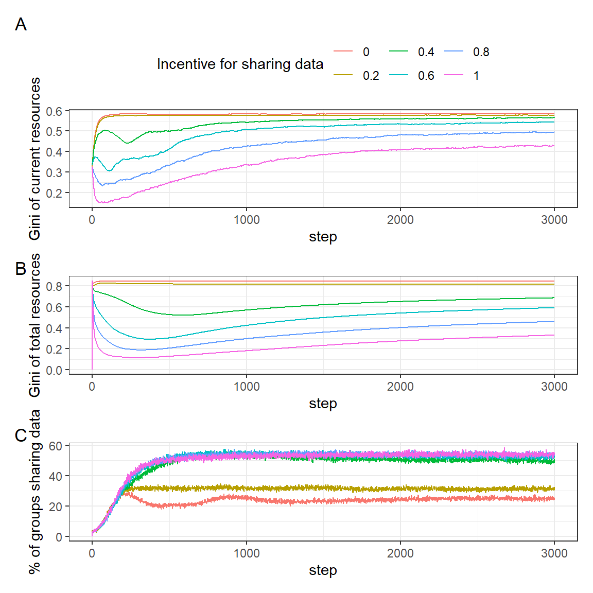
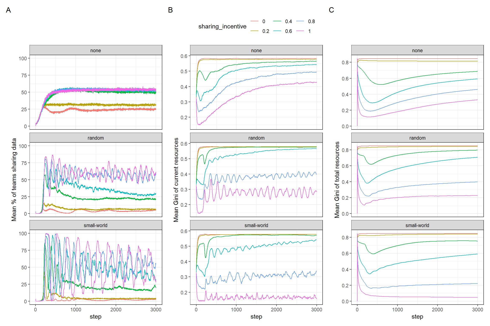
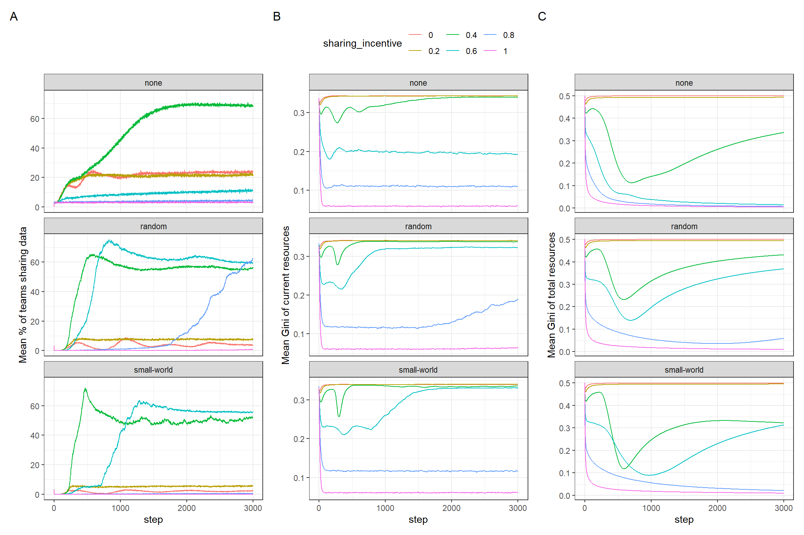
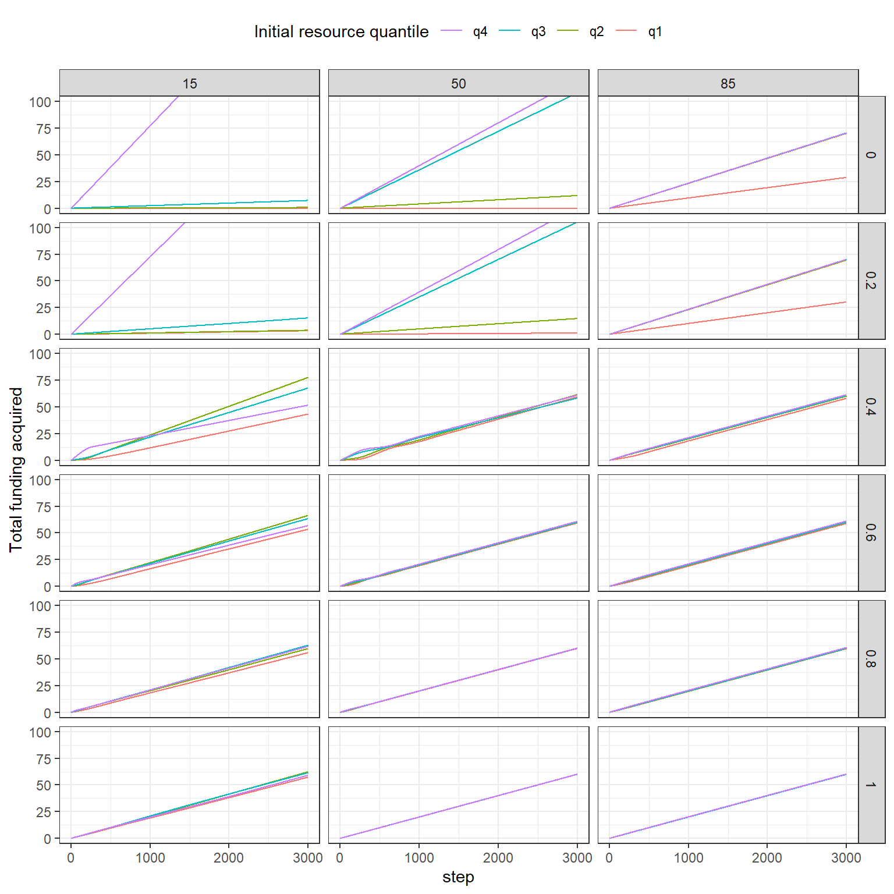
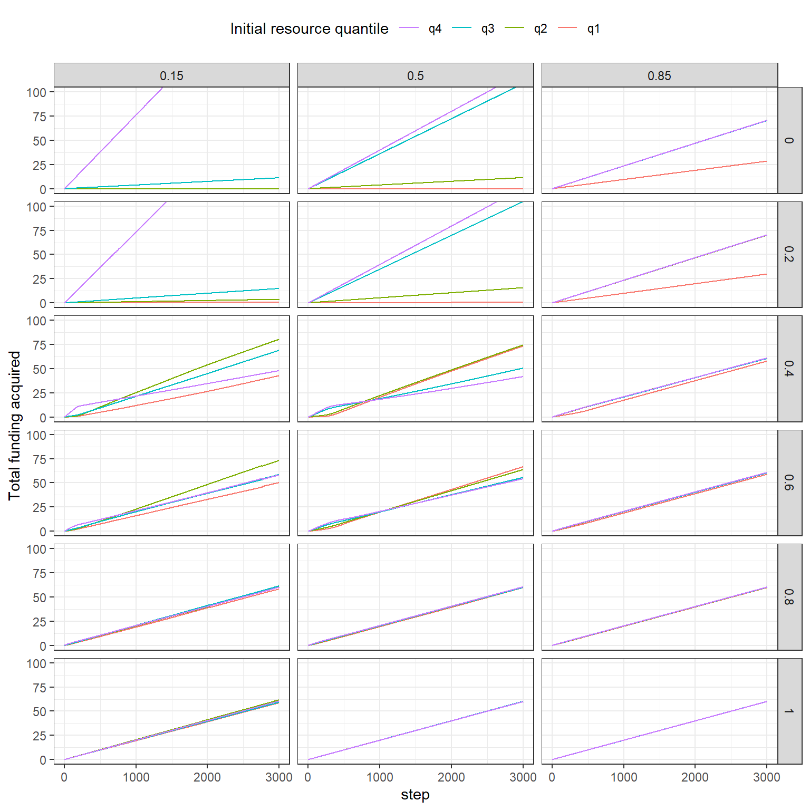

Analyse funding intervention
All plotted data represents the average over 50 runs per condition.
Effect of funder selectivity
Code
no_network <- df %>%
filter(network == "none")
no_network_unif_dist <- no_network %>%
filter(init_dist == "uniform", max_initial_utility == -3)
pdata <- no_network_unif_dist %>%
filter(sharing_incentive == .4) %>%
group_by(step, funded_share) %>%
summarise(mean_gini = mean(resources_gini),
mean_cumulative_gini = mean(total_funding_gini),
mean_sharing = mean(perc_sharing)) %>%
collect()
p1 <- pdata %>%
ggplot(aes(step, mean_gini, colour = as.factor(funded_share))) +
geom_line() +
labs(colour = "% of groups receiving funding",
y = "Gini of current resources")
p2 <- pdata %>%
ggplot(aes(step, mean_cumulative_gini, colour = as.factor(funded_share))) +
geom_line() +
labs(colour = "% of groups receiving funding",
y = "Gini of total resources")
p3 <- pdata %>%
ggplot(aes(step, mean_sharing, colour = as.factor(funded_share))) +
geom_line() +
labs(colour = "% of groups receiving funding",
y = "% of groups sharing data")
p1 / p2 / p3 +
plot_layout(guides = "collect") +
plot_annotation(tag_levels = "A") & theme(legend.position = "top")The above is very interesting: we are not changing incentives, however sharing rate still varies widely. This is a consequence of how exposed agents are to the funding agency. A little counterintuitively, a low rate of funded teams leads to quicker uptake of data sharing. With 50% of teams being funded, uptake is much slower, but reaches higher levels overall (up to 70% of teams, compared to about 50% of teams for 15% funded teams). If almost everyone is funded (85% funded teams), uptake seems to be low.
All of this is when starting out with quite low settings on individual utility. Since the simulation depends strongly on this initial setting (see baseline report), a higher initial effort setting also leads to higher sharing under very un-competitive funding regimes. This is part of a broader dynamic that I have explored interactively: stronger incentives/wider share of funded teams are able to push sharing higher up, but only under the precondition that teams are already sharing. Introducing strong incentives or wide dissemination of funding that is tied to sharing without teams already sharing data leads to low rates, presumably because the cost of taking up sharing is too high in an environment where others are not sharing and still being funded. Competition seems therefore necessary to ignite the behaviour desired by the policy.
Regarding the inequality of total resources (panel B in Figure 1), his is obviously tied to funding selectivity to some extent. Interestingly, with 50% of teams being funded, inequality drops in the first part of the run, but rises again later. The same is true to a lesser extent for the more competitive version. One potential explanation, to be confirmed down below: as data sharing is being taken up, inequality declines because there are multiple ways of receiving funding (by sharing or non-sharing), but this initial re-arranging loses its force once teams are separated into more and less successful clusters, where in the long run, more successful clusters share data (under the incentives regime).
Effect of sharing incentive
Code
no_network <- df %>%
filter(network == "none", funded_share == .15, max_initial_utility == -3)
pdata <- no_network %>%
group_by(step, sharing_incentive) %>%
summarise(mean_gini = mean(resources_gini),
mean_cumulative_gini = mean(total_funding_gini),
mean_sharing = mean(perc_sharing)) %>%
collect()
p1 <- pdata %>%
ggplot(aes(step, mean_gini, colour = as.factor(sharing_incentive))) +
geom_line() +
labs(colour = "Incentive for sharing data",
y = "Gini of current resources")
p2 <- pdata %>%
ggplot(aes(step, mean_cumulative_gini, colour = as.factor(sharing_incentive))) +
geom_line() +
labs(colour = "Incentive for sharing data",
y = "Gini of total resources")
p3 <- pdata %>%
ggplot(aes(step, mean_sharing, colour = as.factor(sharing_incentive))) +
geom_line() +
labs(colour = "Incentive for sharing data",
y = "% of groups sharing data")
p1 / p2 / p3 +
plot_layout(guides = "collect") +
plot_annotation(tag_levels = "A") & theme(legend.position = "top")
This underlines the point from above about inequality first declining and then rising again. Under competitive funding (15% of teams receiving funding), incentives lead to a strong difference in uptake, mainly contrasting low incentives (0 and 0.2) which lead to 20-30% of teams sharing, and all higher settings, which lead to 50% of teams sharing.
Interestingly, higher incentives do not lead to higher sharing beyond this bound. This is likely a result of funding selectivity and the insufficient reach of the funding body to all teams. It is also likely (but have not confirmed) that under these settings, a bimodal resources distribution arises, which also leads to bimodal proposals, and thus, a separation of teams that are able to acquire funding in principle, and those who are not (and subsequently are too far away from ever sharing data, that they can also not get there, because elevating effort is too costly without any funding).
This might point to the need of targeted support to teams that currently are not sharing at all, and don’t have the means to take it up on their own. This also speaks to our research in ON-MERRIT: with policies and incentives for Open Data, there might be the danger of creating two worlds: one with and one without funding and data sharing. Up to this point, this is not tied to initial resources. But given a costly activity (sharing data), this could very well lead to a situation where some teams simply are not able to take up data sharing due to a lack of resources, which precludes them from gaining further resources.
One key question is why stronger incentives to share data lead to more equitable resource distributions. Presumably there is more mixing: some groups are successful with, and some without sharing data, and this changes. When there is no incentive, there is more path dependency in funding.
The overall setup is still not representative of what I would perceive as “true” agent behaviour: If there was an incentive, agents would know it and potentially adapt. From ON-MERRIT and the literature, we assume this is easier for high-resource actors. This type of interaction is precluded from our model.
Here, data sharing might be more an alternative strategy to success: if sharing is rewarded, teams with lower resources (= prestige and publication track record) have equal chances of getting funding simply by starting to share data.
Network effects
Investigate network effects for cases of 15% and 50% funded teams with low initial utility.
Code
pdata <- df %>%
filter(funded_share %in% c(.15, .5), max_initial_utility == -3) %>%
select(run_number, sharing_incentive, funded_share, step, perc_sharing,
resources_gini, network, total_funding_gini) %>%
group_by(sharing_incentive, funded_share, network, step) %>%
summarise(mean_gini = mean(resources_gini),
mean_cumulative_gini = mean(total_funding_gini),
mean_sharing = mean(perc_sharing)) %>%
collect() %>%
pivot_longer(c(mean_gini, mean_cumulative_gini, mean_sharing)) %>%
mutate(sharing_incentive = as.factor(sharing_incentive))
p_gini <- pdata %>%
filter(name == "mean_gini", funded_share == .15) %>%
ggplot(aes(step, value, colour = sharing_incentive)) +
geom_line() +
facet_wrap(vars(network), ncol = 1) +
labs(y = "Mean Gini of current resources")
p_gini_total <- pdata %>%
filter(name == "mean_cumulative_gini", funded_share == .15) %>%
ggplot(aes(step, value, colour = sharing_incentive)) +
geom_line() +
facet_wrap(vars(network), ncol = 1) +
labs(y = "Mean Gini of total resources")
p_sharing <- pdata %>%
filter(name == "mean_sharing", funded_share == .15) %>%
ggplot(aes(step, value, colour = sharing_incentive)) +
geom_line() +
facet_wrap(vars(network), ncol = 1) +
labs(y = "Mean % of teams sharing data")
p_sharing + p_gini + p_gini_total +
plot_layout(guides = "collect") +
plot_annotation(tag_levels = "A") &
theme(legend.position = "top")
These results from Figure 4 are again fascinating. The top row is identical to the above figures. Introduction networks has in a broad sense two effects:
- sharing uptake is more responsive to incentives
- For high incentive settings, there is a lot of alternation between high and low rates of sharing.
Regarding (1), this is presumably because agents are now able to “learn” from their peers and therefore adapt collectively. This also goes in the opposite direction, in that with no to low incentives, sharing is very low.
Regarding (2), the fluctuations can be interpreted more easily when watching the simulation unfold. Given sufficient incentives, sharing is being taken up. Since all agents are connected via a few nodes (Small world example), sharing diffuses to all agents. However, high effort is too costly to be sustained without funding. Once everyone shares, some agents stop sharing again because it is too costly. Over time, this dance approaches a long-term equilibrium: To find a set of connected teams that is equal to 15% of teams, and can therefore be funded over the long term. If such a cluster is found, the simulation becomes much more stable (see the green line for .4 incentives: it also swings widely initially, but stabilises. The instances of .6 incentives still exhibit variation, but approach a similar but higher local equilibrium).
In terms of inequality of total resources, the network conditions behave quite similar to the one without networks. Inequality of current resources is volatile and linked to the alternating extreme points of sharing/non-sharing.
Code
p_gini <- pdata %>%
filter(name == "mean_gini", funded_share == .5) %>%
ggplot(aes(step, value, colour = sharing_incentive)) +
geom_line() +
facet_wrap(vars(network), ncol = 1) +
labs(y = "Mean Gini of current resources")
p_gini_total <- pdata %>%
filter(name == "mean_cumulative_gini", funded_share == .5) %>%
ggplot(aes(step, value, colour = sharing_incentive)) +
geom_line() +
facet_wrap(vars(network), ncol = 1) +
labs(y = "Mean Gini of total resources")
p_sharing <- pdata %>%
filter(name == "mean_sharing", funded_share == .5) %>%
ggplot(aes(step, value, colour = sharing_incentive)) +
geom_line() +
facet_wrap(vars(network), ncol = 1) +
labs(y = "Mean % of teams sharing data")
p_sharing + p_gini + p_gini_total +
plot_layout(guides = "collect") +
plot_annotation(tag_levels = "A") &
theme(legend.position = "top")
It is surprising how different the results of 50% funded teams are to those with 15% funded teams, also in a qualitative sense: there are no alternating extremes here. Sharing uptake is quick for medium incentives (.4 and .6), and settles at about the share of teams being funded (50%).
Total inequality of resources exhibits similar patterns as above: very high incentives lead to very low inequality, which can be equated to purely random funding. However, with medium incentives and network effects, randomness does not take over, at least not in the long run: after an initial drop in inequality, it rises again somewhat. This is tied to the uptick in sharing: while the rate of sharing is rising quickly, inequality goes down. I suspect this is due to the two pathways to success, but this is still to be confirmed. Once sharing tops out and teams settle into either sharing or not sharing, inequality rises again.
Success across quartiles
Code
group_success <- df %>%
filter(max_initial_utility == -3, network == "none") %>%
group_by(step, sharing_incentive, funded_share) %>%
summarise(across(contains("mean_funds"), .fns = mean)) %>%
collect()Code
pdata <- group_success %>%
pivot_longer(contains("mean_funds"), names_to = "quantile",
names_pattern = ".*_(q\\d)")
pdata %>%
ggplot(aes(step, value, colour = quantile)) +
geom_line() +
facet_grid(rows = vars(sharing_incentive),
cols = vars(funded_share)) +
guides(colour = guide_legend(reverse = TRUE)) +
labs(y = "Total funding acquired", colour = "Initial resource quantile") +
theme(legend.position = "top") +
coord_cartesian(ylim = c(0, 100))
The above Figure 6 might provide tentative answers on the question of randomness vs. two-pathways to success. Most relevantly, the case of low funder selectivity (15% funded teams) and moderate incentives (.4): Initially, the top quartile (which had the most resources when starting out) is more successful. However, it soon gets overtaken by the middle two quartiles. This might be evidence to the fact that these quartiles take up sharing and are therefore successful (to be confirmed below).
Given that these effects are stronger with the presence of networks, it is particularly interesting to observe the small-world network case in Figure 8: with moderate incentives, there seems to be indeed a switch: lower resourced quartiles take up sharing as an alternative strategy and are more successful on the longer term. This is restricted to the middle quartiles for the case of 15% funded teams (e.g., by limited funder reach), but goes to a complete switch of resources among quartiles with 50% of funded teams.
It should be noted that this whole upheaval does not lead to a complete reversal, and thus similar levels of inequality as if no team was sharing data. Quite the opposite, resources seem to be split more equally across quartiles, which is also reflected in the lower Gini coefficients for total resources.
Code
group_success <- df %>%
filter(max_initial_utility == -3, network == "random") %>%
group_by(step, sharing_incentive, funded_share) %>%
summarise(across(contains("mean_funds"), .fns = mean)) %>%
collect()
pdata <- group_success %>%
pivot_longer(contains("mean_funds"), names_to = "quantile",
names_pattern = ".*_(q\\d)")
pdata %>%
ggplot(aes(step, value, colour = quantile)) +
geom_line() +
facet_grid(rows = vars(sharing_incentive),
cols = vars(funded_share)) +
guides(colour = guide_legend(reverse = TRUE)) +
labs(y = "Total funding acquired", colour = "Initial resource quantile") +
theme(legend.position = "top") +
coord_cartesian(ylim = c(0, 100))
Code
group_success <- df %>%
filter(max_initial_utility == -3, network == "random") %>%
group_by(step, sharing_incentive, funded_share) %>%
summarise(across(contains("mean_funds"), .fns = mean)) %>%
collect()
pdata <- group_success %>%
pivot_longer(contains("mean_funds"), names_to = "quantile",
names_pattern = ".*_(q\\d)")
pdata %>%
ggplot(aes(step, value, colour = quantile)) +
geom_line() +
facet_grid(rows = vars(sharing_incentive),
cols = vars(funded_share)) +
guides(colour = guide_legend(reverse = TRUE)) +
labs(y = "Total funding acquired", colour = "Initial resource quantile") +
theme(legend.position = "top") +
coord_cartesian(ylim = c(0, 100))Summary
- Incentives lead to higher data sharing in our model.
- Funder selectivity is an additionally important determinant of the diffusion of practices: with no selectivity, the policy does not have an effect. Likewise, if selectivity is high, the effect is also small.
- Introducing data sharing incentives might open up alternative pathways to success: taking up data sharing might be a successful strategy for low-resourced actors to gain an advantage.
Theoretically, one could make two competing arguments: with Bourdieu (homo academicus), one could argue that high-prestige actors are too slow and hesitant to change their ways/habitus. Alternatively, arguing with Rogers (Diffusion of innovation), better resourced actors would be leaders of innovation.
Our results align with what could be postulated with Bourdieu. However, this ignores the potential that high-profile actors take strategic action: embarking on data sharing, knowing that this will be important in the future. Furthermore, our model ignores scaling effects: that more resources might make it easier to take up sharing. Still, I’m intrigued by the fact that what we expected (negative effect of data sharing on inequality) did not in fact emerge, but the opposite.
Limitations
There are many limitations, but currently there are two that stand out to me:
- Max initial utilitiy is uniform. It might be better to model this with skewed distributions: case (a) - majority low effort but some high effort, case (b) the opposite, case (c) normal distribution.
- Correlation between clustering and resources. The above analysis raises the interesting question what would happen if resources were tied to network position.